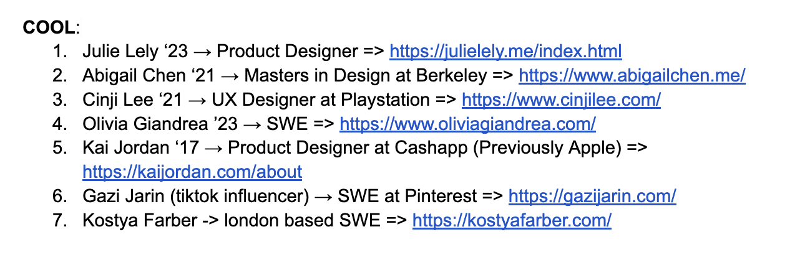

Timeline:
Skills/Tools:
Roles:
As I was gaining experience as a software engineer, data scientist, or product designer, I wanted a digital space that reflects my aspirations, projects, and unique style. I also wanted more experience building code and developing user-facing products that would test my knowledge of front-end development. What better way then to build a portfolio to allow others to more easily get to know who I am?
Building this site has been the most comprehensive SWE project I’ve undergone individually. It taught me how to manage my coding projects, how to conduct user testing, how to restart (from scratch), and more. It has a special place in my heart and I hope you’ve enjoyed it too.
This project was not developed in a strictly linear manner. I would often iterate: going back and forth adjusting the design based on the code or vice versa. But, I began by developing the UI of the site. I explored other portfolios of Wellesley alumni, industry professionals, and even Tiktok influencers, to see what some common features of SWE portfolios were.
After determining what essential design components to include, I began prototyping. Everything from the logo, color scheme, button design, and page layout was made in Figma. My goal with the design was to create that reflected my creative side, but was still readable and engaging.
